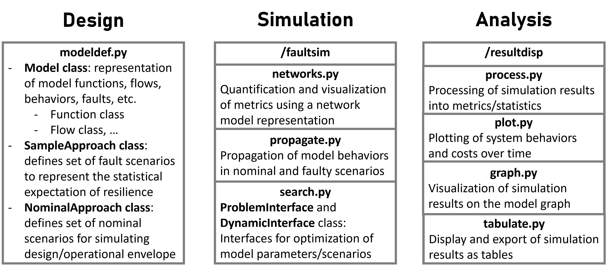
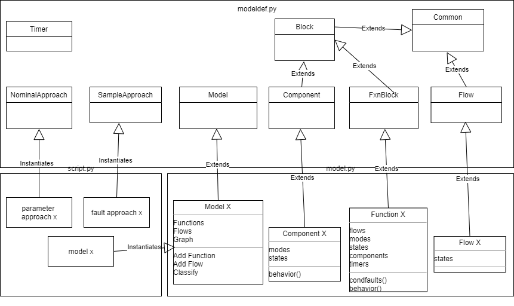

Module Reference
{kind=link}
The fmdtools package is split into three modules for design, simulation, and analysis, as shown above. The fmdtools.modeldef module provides constructs for model and simulation definition, the fmdtools.faultsim subpackage provides functions to simulate these models and the the fmdtools.resultdisp subpackage provides functions to analyze and visualize the results of these simulations.
Thus, working with fmdtools often means creating a model file which extends classes from fmdtools.modeldef, and then simulating and analyzing that model in a script or notebook using the fmdtools.faultsim and fmdtools.resultdisp subpackages. This page provides references for the functions and classes in these modules.
Submodule Links
fmdtools.modeldef
{kind=link}
The fmdtools.modeldef module provides constructs for model and simulation definition, as shown above. In general, to define a model, these classes are extended by the user in a model file to define the specific attributes of the functions, flows, components, etc. The module reference is provided below:
Description: A module to define resilience models and simulations.
Common: Class defining common methods accessible by Function/Flow/Component Classes
FxnBlock: Class defining Model Functions and their attributes
Flow: Class defining Model Flows and their attributes
Component: Class defining Function Components and their attributes
SampleApproach: Class defining fault sampling approaches
NominalApproach: Class defining parameter sampling approaches
- class fmdtools.modeldef.Action(name, flows, flownames=[], states={})
Bases:
fmdtools.modeldef.BlockSuperclass for actions (most attributes and methods inherited from Block superclass)
- behavior(time)
Placeholder behavior method for actions
- updateact(time=0, run_stochastic=False, proptype='dynamic', dt=1.0)
Updates the behaviors, faults, times, etc of the action
- Parameters
time (float, optional) – Model time. The default is 0.
run_stochastic (book) – Whether to run the simulation using stochastic or deterministic behavior
- class fmdtools.modeldef.Block(states={})
Bases:
fmdtools.modeldef.CommonSuperclass for FxnBlock and Component subclasses. Has functions for model setup, querying state, reseting the model
- failrate
Failure rate for the block
- Type
float
- time
internal time of the function
- Type
float
- faults
faults currently present in the block. If the function is nominal, set is {‘nom’}
- Type
set
- faultmodes
- faults possible to inject in the block and their properties. Has structure:
- faultname :
dist : (float of % failures due to this fualt)
oppvect : (list of relative probabilities of the fault occuring in each phase)
rcost : cost of repairing the fault
- Type
dict
- opermodes
possible modes for the block to enter
- Type
list
- rngs
dictionary of random number generators for random states
- Type
dict
- seed
seed sequence for internal random number generator
- Type
int
- mode
current mode of block operation
- Type
string
- add_fault(*faults)
Adds fault (a str) to the block
- Parameters
*fault (str(s)) – name(s) of the fault to add to the black
- add_he_rate(gtp, EPCs={'na': [1, 0]})
Calculates self.failrate based on a human error probability model.
- Parameters
gtp (float) – Generic Task Probability. (from HEART)
EPCs (Dict or list) – Error producing conditions (and respective factors) for a given task (from HEART). Used in format: Dict {‘name’:[EPC factor, Effect proportion]} or list [[EPC factor, Effect proportion],[[EPC factor, Effect proportion]]]
- add_params(*params)
Adds given dictionary(s) of parameters to the function/block. e.g. self.add_params({‘x’:1,’y’:1}) results in a block where:
self.x = 1, self.y = 1
- any_faults()
check if the block has any fault modes
- assoc_faultstate_modes(franges={}, mode_app='none', manual_modes={}, probtype='prob', units='hr', key_phases_by='global')
Associates modes with given faultstates.
- Parameters
franges (dict, optional) – Dictionary of form {‘state’:{val1, val2…}) of ranges for each health state (if used to generate modes). The default is {}.
mode_app (str) – type of modes to elaborate from the given health states.
manual_modes (dict, optional) –
- Dictionary/Set of faultmodes with structure, which has the form:
- dict {‘fault1’: [atts], ‘fault2’: atts}, where atts may be of form:
states: {state1: val1, state2, val2}
[states, faultattributes], where faultattributes is the same as in assoc_modes
probtype (str, optional) – Type of probability in the probability model, a per-time ‘rate’ or per-run ‘prob’. The default is ‘rate’
units (str, optional) – Type of units (‘sec’/’min’/’hr’/’day’) used for the rates. Default is ‘hr’
- assoc_faultstates(fstates, mode_app='single-state', probtype='prob', units='hr')
Adds health state attributes to the model (and a mode approach if desired).
- Parameters
fstates (Dict) – Health states to incorporate in the model and their respective values. e.g., {‘state’:[1,{0,2,-1}]}, {‘state’:{0,2,-1}}
mode_app (str) – type of modes to elaborate from the given health states.
- assoc_modes(faultmodes={}, opermodes=[], initmode='nom', name='', probtype='rate', units='hr', exclusive=False, key_phases_by='global', longnames={})
Associates fault and operational modes with the block when called in the function or component.
- Parameters
faultmodes (dict, optional) –
- Dictionary/Set of faultmodes with structure, which can have the forms:
set {‘fault1’, ‘fault2’, ‘fault3’} (just the respective faults)
- dict {‘fault1’: faultattributes, ‘fault2’: faultattributes}, where faultattributes is:
float: rate for the mode
dict/set/str: opportunity vector for the mode specified as a dictionary/set/string
- list: [rate, oppvect, rcost]
- a list of arguments where the float arguments are specified in the order rate, rcost (if provided) and
- an oppvect opportunity vector is provided (anywhere) with the form:
-list: [float1, float2,…], a vector of relative likelihoods for each phase, or -dict: {opermode:float1, opermode:float1}, a dict of relative likelihoods for each phase/mode -set: {opermode, opermode,…}, a set of applicable phases (assumed equally likely). the phases/modes to key by are defined in “key_phases_by” -str: ‘all’/’modename’, either specifying all operational modes/phases or a single operational mode/phase
opermodes (list, optional) – List of operational modes
initmode (str, optional) – Initial operational mode. Default is ‘nom’
name (str, optional) – (for components/actions only) Name of the component. The default is ‘’.
probtype (str, optional) – Type of probability in the probability model, a per-time ‘rate’ or per-run ‘prob’. The default is ‘rate’
units (str, optional) – Type of units (‘sec’/’min’/’hr’/’day’) used for the rates. Default is ‘hr’
exclusive (True/False) – Whether fault modes are exclusive of each other or not. Default is False (i.e. more than one can be present).
key_phases_by ('self'/'none'/'global'/'fxnname') – Phases to key the faultmodes by (using local, global, or an external function’s modes’). Default is ‘global’
longnames (dict) – Longer names for the faults (if desired). {faultname: longname}
- assoc_rand_state(name, default, seed=None, auto_update=[])
Associate a stochastic state with the Block. Enables the simulation of stochastic behavior over time.
- Parameters
name (str) – name for the parameter to use in the model behavior.
default (int/float/str/etc) – Default value for the parameter for the parameter
seed (int) – seed for the random state generator to use. Defaults to None.
auto_update (list, optional) –
If given, updates the state with the given numpy method at each time-step. List is made up of two arguments: - generator_method : str
Name of the numpy random method to use. see: https://numpy.org/doc/stable/reference/random/generator.html
- generator_paramstuple
Parameter inputs for the numpy generator function
- assoc_rand_states(*states)
Associates multiple random states with the model
- Parameters
*states (tuple) –
can give any number of tuples for each of the states. The tuple is of the form (name, default), where:
- namestr
name for the parameter to use in the model behavior.
- defaultint/float/str/etc
Default value for the parameter
- assoc_timers(*timers)
Associates timer objects with the given function/block
- check_update_nominal_faults()
- choose_rand_fault(faults, default='first', combinations=1)
Randomly chooses a fault or combination of faults to insert in the function.
- Parameters
faults (list) – list of fault modes to choose from
default (str/list, optional) – Default fault to inject when model is run deterministically. The default is ‘first’, which chooses the first in the list. Can provide a mode as a str or a list of modes
combinations (int, optional) – Number of combinations of faults to elaborate and select from. The default is 1, which just chooses single fault modes.
- get_flowtypes()
Returns the names of the flow types in the model
- get_memory()
Gets the approximate memory usage of the block in bytes (not complete)
- has_fault(*faults)
Check if the block has fault (a str)
- Parameters
*faults (strs) – names of the fault to check.
- in_mode(*modes)
Checks if the system is in a given operational mode
- Parameters
*modes (strs) – names of the mode to check
- no_fault(fault)
Check if the block does not have fault (a str)
- Parameters
fault (str) – name of the fault to check.
- remove_any_faults(opermode=False, warnmessage=False)
Resets fault mode to nominal and returns to the given operational mode
- Parameters
opermode (str (optional)) – operational mode to return to when the fault mode is removed
warnmessage (str/False) – Warning to give when performing operation. Default is False (no warning)
- remove_fault(fault_to_remove, opermode=False, warnmessage=False)
Removes fault in the set of faults and returns to given operational mode
- Parameters
fault_to_replace (str) – name of the fault to remove
opermode (str (optional)) – operational mode to return to when the fault mode is removed
warnmessage (str/False) – Warning to give when performing operation. Default is False (no warning)
- replace_fault(fault_to_replace, fault_to_add)
Replaces fault_to_replace with fault_to_add in the set of faults
- Parameters
fault_to_replace (str) – name of the fault to replace
fault_to_add (str) – name of the fault to add in its place
- reset()
Resets the block to the initial state with no faults. Used by default in derived objects when resetting the model. Requires associated flows to be cleared first.
- return_states()
Returns states of the block at the current state. Used (iteratively) to record states over time.
- Returns
states (dict) – States (variables) of the block
faults (set) – Faults present in the block
- set_mode(mode)
Sets a mode in the block
- Parameters
mode (str) – name of the mode to enter.
- set_rand(statename, methodname, *args)
Update the given random state with a given method and arguments
- Parameters
statename (str) – name of the random state defined in assoc_rand_state(s)
methodname – str name of the numpy method to call in the rng
*args (args) – arguments for the numpy method
- set_timestep(use_local=True, local_tstep=None, global_tstep=1.0)
Sets the timestep of the function given the options use_local (which selects whether it uses local_timestep or global_timestep)
- to_default(*statenames)
Resets (given or all by default) random states to their default values
- Parameters
*statenames (str, str, str...) – names of the random state defined in assoc_rand_state(s)
- to_fault(fault)
Moves from the current fault mode to a new fault mode
- Parameters
fault (str) – name of the fault mode to switch to
- update_stochastic_states()
Updates the defined stochastic states defined to auto-update (see assoc_randstates).
- class fmdtools.modeldef.Common
Bases:
object- add(*states)
Returns the addition of given attributes of the model construct e.g., a = self.add(‘x’,’y’,’z’) is the same as
a = self.x+self.y+self.z
- assign(obj, *states)
Sets the same-named values of the current flow/function object to those of a given flow. Further arguments specify which values. e.g. self.EE1.assign(EE2, ‘v’, ‘a’) is the same as saying
self.EE1.a = self.EE2.a; self.EE1.v = self.EE2.v
- different(values, *states)
Tests whether a given iterable values has any different value the given states in the model construct. e.g., self.same([1,2],’a’,’b’) is the same as
any([1,2]!=[self.a, self.b])
- div(*states)
Returns the division of given attributes of the model construct e.g., a = self.div(‘x’,’y’,’z’) is the same as
a = (self.x/self.y)/self.z
- get(*attnames, **kwargs)
Returns the given attribute names (strings). Mainly useful for reducing length of lines/adding clarity to assignment statements. e.g., x,y = self.Pos.get(‘x’,’y’) is the same as
x,y = self.Pos.x, self.Pos.y, or z = self.Pos.get(‘x’,’y’) is the same as z = np.array([self.Pos.x, self.Pos.y])
- gett(*attnames)
Alternative to self.get that returns the given constructs as a tuple instead of as an array. Useful when a numpy array would translate the underlying data types poorly (e.g., np.array([1,’b’] would make 1 a string–using a tuple instead preserves the data type)
- inc(**kwargs)
Increments the given arguments by a given value. Mainly useful for reducing length/adding clarity to increment statements. e.g., self.Pos.inc(x=1,y=1) is the same as
self.Pos.x+=1; self.Pos.y+=1, or self.Pos.x = self.Pos.x + 1; self.Pos.y = self.Pos.y +1
Can additionally be provided with a second value denoting a limit on the increments e.g. self.Pos.inc(x=(1,10)) will increment x by 1 until it reaches 10
- limit(**kwargs)
Enforces limits on the value of a given property. Mainly useful for reducing length/adding clarity to increment statements. e.g., self.EE.limit(a=(0,100), v=(0,12)) is the same as
self.EE.a = min(100, max(0,self.EE.a)); self.EE.v = min(12, max(0,self.EE.v))
- make_flowdict(flownames, flows)
Puts a list of flows with a list of flow names in a dictionary.
- Parameters
flownames (list or dict or empty) – names of flows corresponding to flows using {externalname: internalname}
flows (list) – flows
- Returns
flowdict – dict of flows indexed by flownames
- Return type
dict
- mul(*states)
Returns the multiplication of given attributes of the model construct. e.g., a = self.mul(‘x’,’y’,’z’) is the same as
a = self.x*self.y*self.z
- put(**kwargs)
Sets the given arguments to a given value. Mainly useful for reducing length/adding clarity to assignment statements. e.g., self.EE.put(v=1, a=1) is the same as saying
self.EE.v=1; self.EE.a=1
- same(values, *states)
Tests whether a given iterable values has the same value as each give state in the model construct. e.g., self.same([1,2],’a’,’b’) is the same as
all([1,2]==[self.a, self.b])
- set_atts(**kwargs)
Sets the given arguments to a given value. Mainly useful for reducing length/adding clarity to assignment statements in __init__ methods (self.put is reccomended otherwise so that the iteration is on function/flow states) e.g., self.set_attr(maxpower=1, maxvoltage=1) is the same as saying
self.maxpower=1; self.maxvoltage=1
- sub(*states)
Returns the addition of given attributes of the model construct e.g., a = self.div(‘x’,’y’,’z’) is the same as
a = (self.x-self.y)-self.z
- values()
- warn(*messages, stacklevel=2)
Prints warning message(s) when called.
- Parameters
*messages (str) – Strings to make up the message (will be joined by spaces)
stacklevel (int) – Where the warning points to. The default is 2 (points to the place in the model)
- class fmdtools.modeldef.Component(name, states={})
Bases:
fmdtools.modeldef.BlockSuperclass for components (most attributes and methods inherited from Block superclass)
- behavior(time)
Placeholder for component behavior methods. Enables one to include components without yet having a defined behavior for them.
- class fmdtools.modeldef.Flow(states, name, ftype='generic')
Bases:
fmdtools.modeldef.CommonSuperclass for flows. Instanced by Model.add_flow but can also be used as a flow superclass if flow attributes are not easily definable as a dict.
- copy()
Returns a copy of the flow object (used when copying the model)
- get_memory()
Returns the approximate memory usage of the flow.
- reset()
Resets the flow to the initial state
- status()
Returns a dict with the current states of the flow.
- class fmdtools.modeldef.FxnBlock(name, flows, flownames=[], states={}, components={}, timers=[], dt=None, seed=None)
Bases:
fmdtools.modeldef.BlockSuperclass for functions.
- typestr
labels the function as a function (may not be necessary) Default is ‘function’
- flowsdict
flows associated with the function. structured {flow:{value:XX}}
- componentsdict
component instantiations of the function (if any)
- timersset
names of timers to be used in the function (if any)
- dtfloat
local timestep of the model in the function (overrides global timestep by default (‘use_local’:True in modelparameters))
- add_act(name, action, *flows, duration=0.0, **params)
Associate an Action with the Function Block for use in the Action Sequence Graph
- Parameters
name (str) – Internal Name for the Action
action (Action) – Action class to instantiate
*flows (flow) – Flows (optional) which connect the actions
**params (any) – parameters to instantiate the Action with.
- add_cond(start_action, end_action, name='auto', condition='pass')
Associates a Condition with the Function Block for use in the Action Sequence Graph
- Parameters
start_action (str) – Action where the condition is checked
end_action (str) – Action that the condition leads to.
name (str) – Name for the condition. Defaults to numbered conditions if none are provided.
condition (method) – Method in the class to use as a condition. Defaults to self.condition_pass if none are provided
- add_flow(flowname, flowdict={}, flowtype='')
Adds a flow with given attributes to the Function Block
- Parameters
flowname (str) – Unique flow name to give the flow in the function
flowattributes (dict, Flow, set or empty set) – Dictionary of flow attributes e.g. {‘value’:XX}, or the Flow object. If a set of attribute names is provided, each will be given a value of 1 If an empty set is given, it will be represented w- {flowname: 1}
- build_ASG(initial_action='auto', state_rep='finite-state', max_action_prop='until_false', mode_rep='replace', asg_proptype='dynamic', per_timestep=False, asg_pos={})
Constructs the Action Sequence Graph with the given parameters.
- Parameters
initial_action (str/list) –
- Initial action to set as active. Default is ‘auto’
’auto’ finds the starting node of the graph and uses it
’ActionName’ sets the given action as the first active action
providing a list of actions will set them all to active (if multi-state rep is used)
state_rep ('finite-state'/'multi-state') –
- How the states of the system are represented. Default is ‘finite-state’
’finite-state’ means only one action in the system can be active at once (i.e., a finite state machine)
’multi-state’ means multiple actions can be performed at once
max_action_prop ('until_false'/'manual'/int) –
- How actions progress. Default is ‘until_false’
’until_false’ means actions are simulated until all outgoing conditions are false
providing an integer places a limit on the number of actions that can be performed per timestep
mode_rep ('replace'/'independent') –
- How actions are used to represent modes. Default is ‘replace.’
’replace’ uses the actions to represent the operational modes of the system (only compatible with ‘exclusive’ representation)
’independent’ keeps the actions and function-level mode seperate
asg_proptype ('static'/'dynamic'/'manual') –
- Which propagation step to execute the Action Sequence Graph in. Default is ‘dynamic’
’manual’ means that the propagation is performed manually (defined in a behavior method)
per_timestep (bool) – Defines whether the action sequence graph is reset to the initial state each time-step (True) or stays in the current action (False). Default is False
asg_pos (dict, optional) – Positions of the nodes of the action/flow graph {node: [x,y]}. Default is {}
- cond_pass()
- copy(newflows, *attr)
Creates a copy of the function object with newflows and arbitrary parameters associated with the copy. Used when copying the model.
- Parameters
newflows (list) – list of new flow objects to be associated with the copy of the function
*attr (any) – arbitrary parameters to add (if funciton takes in more than flows e.g. design variables)
- Returns
copy – Copy of the given function with new flows
- Return type
- prop_internal(faults, time, run_stochastic, proptype)
Propagates behaviors through the internal Action Sequence Graph
- Parameters
faults (list, optional) – Faults to inject in the function. The default is [‘nom’].
time (float, optional) – Model time. The default is 0.
run_stochastic (book) – Whether to run the simulation using stochastic or deterministic behavior
proptype (str) – Type of propagation step to update (‘behavior’, ‘static_behavior’, or ‘dynamic_behavior’)
- set_active_actions(actions)
Helper method for setting given action(s) as active
- show_ASG(gtype='combined', with_cond_labels=True, pos=[])
Shows a visual representation of the internal Action Sequence Graph of the Function Block
- Parameters
gtype ('combined'/'flows'/'actions') – Gives a graphical representation of the ASG. Default is ‘combined’ - ‘actions’ (for function input): plots the sequence of actions in the function’s Action Sequence Graph - ‘flows’ (for function input): plots the action/flow connections in the function’s Action Sequence Graph - ‘combined’ (for function input): plots both the sequence of actions in the functions ASG and action/flow connections
with_cond_labels (Bool) – Whether or not to label the conditions
pos (dict) – Dictionary of node positions for actions/flows
- update_modestates()
Updates states of the model associated with a specific fault mode (see assoc_modes).
- updatefxn(proptype, faults=[], time=0, run_stochastic=False)
Updates the state of the function at a given time and injects faults.
- Parameters
proptype (str) – Type of propagation step to update (‘behavior’, ‘static_behavior’, or ‘dynamic_behavior’)
faults (list, optional) – Faults to inject in the function. The default is [‘nom’].
time (float, optional) – Model time. The default is 0.
run_stochastic (book) – Whether to run the simulation using stochastic or deterministic behavior
- class fmdtools.modeldef.GenericFxn(name, flows)
Bases:
fmdtools.modeldef.FxnBlockGeneric function block. For use when the user has not yet defined a class for the given (to be implemented) function block. Acts as a placeholder that enables simulation.
- class fmdtools.modeldef.Model(params={}, modelparams={}, valparams='all')
Bases:
objectModel superclass used to construct the model, return representations of the model, and copy and reset the model when run.
- type
labels the model as a model (may not be necessary)
- Type
str
- flows
dictionary of flows objects in the model indexed by name
- Type
dict
- fxns
dictionary of functions in the model indexed by name
- Type
dict
- params,modelparams,valparams
dictionaries of (optional) parameters for a given instantiation of a model
- Type
dict
- modelparams
- dictionary of parameters for running a simulation. defines these parameters in the model:
- phasesdict
phases {‘name’:[start, end]} that the simulation progresses through
- timesarray
array of times to sample (if desired) [starttime, sampletime1, sampletime2,… endtime]
- dtfloat
timestep used in the simulation. default is 1.0
- unitsstr
time-units. default is hours
- use_end_conditionbool
whether to use an end-condition method (defined by user-defined end_condition method) or defined end time to end the simulation
- seedint
seed used for the internal random number generator
- Type
dict
- valparams
dictionary of parameters for defining what simulation constructs to record for find_classification
- bipartite
bipartite graph view of the functions and flows
- Type
networkx graph
- graph
multigraph view of functions and flows
- Type
networkx graph
- add_flow(flowname, flowdict={}, flowtype='')
Adds a flow with given attributes to the model.
- Parameters
flowname (str) – Unique flow name to give the flow in the model
flowattributes (dict, Flow, set or empty set) – Dictionary of flow attributes e.g. {‘value’:XX}, or the Flow object. If a set of attribute names is provided, each will be given a value of 1 If an empty set is given, it will be represented w- {flowname: 1}
- add_flows(flownames, flowdict={}, flowtype='generic')
Adds a set of flows with the same type and initial parameters
- Parameters
flowname (list) – Unique flow names to give the flows in the model
flowattributes (dict, Flow, set or empty set) – Dictionary of flow attributes e.g. {‘value’:XX}, or the Flow object. If a set of attribute names is provided, each will be given a value of 1 If an empty set is given, it will be represented w- {flowname: 1}
- add_fxn(name, flownames, fclass=<class 'fmdtools.modeldef.GenericFxn'>, fparams='None')
Instantiates a given function in the model.
- Parameters
name (str) – Name to give the function.
flownames (list) – List of flows to associate with the function.
fclass (Class) – Class to instantiate the function as.
fparams (arbitrary float, dict, list, etc.) – Other parameters to send to the __init__ method of the function class
- build_model(functionorder=[], graph_pos={}, bipartite_pos={}, require_connections=True)
Builds the model graph after the functions have been added.
- Parameters
functionorder (list, optional) – The order for the functions to be executed in. The default is [].
graph_pos (dict, optional) – position of graph nodes. The default is {}.
bipartite_pos (dict, optional) – position of bipartite graph nodes. The default is {}.
- calc_repaircost(additional_cost=0, default_cost=0, max_cost=inf)
Calculates the repair cost of the fault modes in the model based on given mode cost information for each function mode (in fxn.assoc_faultmodes).
- Parameters
additional_cost (int/float) – Additional cost to add if there are faults in the model. Default is 0.
default_cost (int/float) – Cost to use for each fault mode if no fault cost information given in assoc_faultmodes/ Default is 0.
max_cost (int/float) – Maximum cost of repair (e.g. cost of replacement). Default is np.inf
- Returns
repair_cost – Cost of repairing the fault modes in the given model
- Return type
float
- construct_graph(graph_pos={}, bipartite_pos={}, require_connections=True)
Creates and returns a graph representation of the model
- Returns
graph – multgraph representation of the model functions and flows
- Return type
networkx graph
- copy()
Copies the model at the current state.
- Returns
copy – Copy of the curent model.
- Return type
- find_any_phase_overlap()
- find_classification(scen, mdlhists)
Placeholder for model find_classification methods (for running nominal models)
- flows_of_type(ftype)
Returns the set of flows for each flow type
- flowtypes()
Returns the set of flow types used in the model
- flowtypes_for_fxnclasses()
Returns the flows required by each function class in the model (as a dict)
- fxnclasses()
Returns the set of class names used in the model
- fxns_of_class(ftype)
Returns dict of functionname:functionobjects corresponding to the given class name ftype
- get_flows(flownames)
Returns a list of the model flow objects
- get_memory()
Returns the approximate memory usage of the model, along with a profile of fxn/flow memory usage.
- reset()
Resets the model to the initial state (with no faults, etc)
- return_componentgraph(fxnname)
Returns a graph representation of the components associated with a given funciton
- Parameters
fxnname (str) – Name of the function (e.g. in mdl.fxns)
- Returns
g – Bipartite graph representation of the function with components.
- Return type
networkx graph
- return_faultmodes()
Returns faultmodes present in the model
- Returns
modes (dict) – Fault modes present in the model indexed by function name
modeprops (dict) – Fault mode properties (defined in the function definition) with structure {fxn:mode:properties}
- return_paramgraph()
Returns a graph representation of the flows in the model, where flows are nodes and edges are associations in functions
- return_stategraph(gtype='bipartite')
Returns a graph representation of the current state of the model.
- Parameters
gtype (str, optional) – Type of graph to return (normal, bipartite, component, or typegraph). The default is ‘bipartite’.
- Returns
graph – Graph representation of the system with the modes and states added as attributes.
- Return type
networkx graph
- return_typegraph(withflows=True)
Returns a graph with the type containment relationships of the different model constructs.
- Parameters
withflows (bool, optional) – Whether to include flows. The default is True.
- Returns
g – networkx directed graph of the type relationships
- Return type
nx.DiGraph
- set_functionorder(functionorder)
Manually sets the order of functions to be executed (otherwise it will be executed based on the sequence of add_fxn calls)
- class fmdtools.modeldef.NominalApproach
Bases:
objectClass for defining sets of nominal simulations. To explain, a given system may have a number of input situations (missions, terrain, etc) which the user may want to simulate to ensure the system operates as desired. This class (in conjunction with propagate.nominal_approach()) can be used to perform these simulations.
- scenarios
scenarios to inject based on the approach
- Type
dict
- num_scenarios
number of scenarios in the approach
- Type
int
- ranges
dict of the parameters defined in each method for the approach
- Type
dict
- add_param_ranges(paramfunc, rangeid, *args, replicates=1, seeds='shared', set_args={}, **kwargs)
Adds a set of scenarios to the approach.
- Parameters
paramfunc (method) – Python method which generates a set of model parameters given the input arguments. method should have form: method(fixedarg, fixedarg…, inputarg=X, inputarg=X)
rangeid (str) – Name for the range being used. Default is ‘nominal’
*args (specifies values for positional args of paramfunc.) – May be given as a fixed float/int/dict/str defining a set value for positional arguments
replicates (int) – Number of points to take over each range (for random parameters). Default is 1.
seeds (str/list) –
- Options for seeding models/replicates: (Default is ‘shared’)
’shared’ creates random seeds and shares them between parameters and models
’independent’ creates separate random seeds for models and parameter generation
’keep_model’ uses the seed provided in the model for all of the model
When a list is provided, these seeds are are used (and shared). Must be of length replicates.
set_args (dict) – Dictionary of lists of values for each param e.g., {‘param1’:[value1, value2, value3]}
**kwargs (specifies range for keyword args of paramfunc) – May be given as a fixed float/int/dict/str (k=value) defining a set value for the range (if not the default) or as a tuple k=(start, end, step) for the range, or
- add_param_replicates(paramfunc, rangeid, replicates, *args, ind_seeds=True, **kwargs)
Adds a set of repeated scenarios to the approach. For use in (external) random scenario generation.
- Parameters
paramfunc (method) – Python method which generates a set of model parameters given the input arguments. method should have form: method(fixedarg, fixedarg…, inputarg=X, inputarg=X)
rangeid (str) – Name for the set of replicates
replicates (int) – Number of replicates to use
*args (any) – arguments to send to paramfunc
ind_seeds (Bool/list) – Whether the models should be run with different seeds (rather than the same seed). Default is True When a list is provided, these seeds are are used. Must be of length replicates.
**kwargs (any) – keyword arguments to send to paramfunc
- add_rand_params(paramfunc, rangeid, *fixedargs, prob_weight=1.0, replicates=1000, seeds='shared', **randvars)
Adds a set of random scenarios to the approach.
- Parameters
paramfunc (method) – Python method which generates a set of model parameters given the input arguments. method should have form: method(fixedarg, fixedarg…, inputarg=X, inputarg=X)
rangeid (str) – Name for the range being used. Default is ‘nominal’
prob_weight (float (0-1)) – Overall probability for the set of scenarios (to use if adding more ranges). Default is 1.0
*fixedargs (any) – Fixed positional arguments in the parameter generator function. Useful for discrete modes with different parameters.
seeds (str/list) –
- Options for seeding models/replicates: (Default is ‘shared’)
’shared’ creates random seeds and shares them between parameters and models
’independent’ creates separate random seeds for models and parameter generation
’keep_model’ uses the seed provided in the model for all of the model
When a list is provided, these seeds are are used (and shared). Must be of length replicates.
**randvars (key=tuple) – Specification for each random input parameter, specified as input = (randfunc, param1, param2…) where randfunc is the method producing random outputs (e.g. numpy.random.rand) and the successive parameters param1, param2, etc are inputs to the method
- add_seed_replicates(rangeid, seeds)
Generates an approach with different seeds to use for the model’s internal stochastic behaviors
- Parameters
rangeid (str) – Name for the set of replicates
seeds (int/list) – Number of seeds (if an int) or a list of seeds to use.
- assoc_probs(rangeid, prob_weight=1.0, **inputpdfs)
Associates a probability model (assuming variable independence) with a given previously-defined range of scenarios using given pdfs
- Parameters
rangeid (str) – Name of the range to apply the probability model to.
prob_weight (float, optional) – Overall probability for the set of scenarios (to use if adding more ranges or if the range does not cover the space of probability). The default is 1.0.
**inputpdfs (key=(pdf, params)) – pdf to associate with the different variables of the model. Where the pdf has form pdf(x, **kwargs) where x is the location and **kwargs is parameters (for example, scipy.stats.norm.pdf) and params is a dictionary of parameters (e.g., {‘mu’:1,’std’:1}) to use ‘ as the key/parameter inputs to the pdf
- change_params(rangeid='all', **kwargs)
Changes a given parameter accross all scenarios. Modifies ‘params’ (rather than regenerating params from the paramfunc).
- Parameters
rangeid (str) – Name of the range to modify. Optional. Defaults to “all”
**kwargs (any) – Parameters to change stated as paramname=value or as a dict paramname={‘sub_param’:value}, where ‘sub_param’ is the parameter of the dictionary with name paramname to update
- copy()
Copies the given sampleapproach. Used in nested scenario sampling.
- get_param_scens(rangeid, *level_params)
Returns the scenarios of a range associated with given parameter ranges
- Parameters
rangeid (str) – Range id to check
level_params (str (multiple)) – Level parameters iterate over
- Returns
param_scens – The scenarios associated with each level of parameter (or joint parameters)
- Return type
dict
- range_to_space(inputranges)
- update_factor_seeds(rangeid, inputparam, seeds='new')
Changes/randomizes the seeds along a given factor in a range
- Parameters
rangeid (str) – Name of the range being updated
inputparam (str) – Name of the parameter to vary the seeds over
seeds (str/list, optional) – List of seeds to update to. The default is ‘new’, which picks them randomly
- class fmdtools.modeldef.SampleApproach(mdl, faults='all', phases='global', modephases={}, join_modephases=False, jointfaults={'faults': 'None'}, sampparams={}, defaultsamp={'numpts': 1, 'samp': 'evenspacing'}, reduce_to=False)
Bases:
objectClass for defining the sample approach to be used for a set of faults.
- phases
phases given to sample the fault modes in
- Type
dict
- globalphases
phases defined in the model
- Type
dict
- modephases
Dictionary of modes associated with each state
- Type
dict
- mode_phase_map
Mapping of modes to their corresponding phases
- Type
dict
- tstep
timestep defined in the model
- Type
float
- fxnrates
overall failure rates for each function
- Type
dict
- comprates
overall failure rates for each component
- Type
dict
- jointmodes
(if any) joint fault modes to be injected in the approach
- Type
list
- rates/comprates/rates_timeless
rates of each mode (fxn, mode) in each model phase, structured {fxnmode: {phaseid:rate}}
- Type
dict
- sampletimes
faults to inject at each time in each phase, structured {phaseid:time:fnxmode}
- Type
dict
- weights
weight to put on each time each fault was injected, structured {fxnmode:phaseid:time:weight}
- Type
dict
- sampparams
parameters used to sample each mode
- Type
dict
- scenlist
list of fault scenarios (dicts of faults and properties) that fault propagation iterates through
- Type
list
- scenids
a list of scenario ids associated with a given fault in a given phase, structured {(fxnmode,phaseid):listofnames}
- Type
dict
- mode_phase_map
a dict of modes and their respective phases to inject with structure {fxnmode:{mode_phase_map:[starttime, endtime]}}
- Type
dict
- units
time-units to use in the approach probability model
- Type
str
- unit_factors
multiplication factors for converting some time units to others.
- Type
dict
- add_phasetimes(fxnmode, phaseid, phasetimes, weights=[])
Adds a set of times for a given mode to sampletimes
- calc_intervaltime(times, tstep)
- create_nomscen(mdl)
Creates a nominal scenario
- create_sampletimes(mdl, params={}, default={'numpts': 1, 'samp': 'evenspacing'})
Initializes weights and sampletimes
- create_scenarios()
Creates list of scenarios to be iterated over in fault injection. Added as scenlist and scenids
- get_id_weights()
Returns a dictionary with weights for each scenario with structure {scenid:weight}
- get_scenid_groups(group_by='phases', group_dict={})
Returns a dict with different scenario ids grouped according to group_by. group_by: str, with options: - ‘none’: Returns {‘scenid’:’scenid’} for all scenarios - ‘phase’: Returns {(fxnmode, fxnphase):{scenids}}–identical scenarios within a given phase are grouped - ‘fxnfault’: Returns {fxnmode:{scenids}} All identical scenarios (fxn, mode) are grouped - ‘mode’: Returns {mode:{scenids}}. All scenarios with the same mode name are grouped - ‘mode type’: Returns {modetype:scenids}. All scenarios with the same mode type (mode types must be given to the sampleapproach) are grouped - ‘functions’: Returns {function:scenids}. All scenarios and modes from a given function are grouped. - ‘times’: Returns {time:scenids}. All scenarios at a given time are grouped. - ‘fxnclassfault’: Returns {(fxnclass, mode):scenids}. All scenarios (fxnclass, mode) from a given function class are grouped. - ‘fxnclass’: Returns {fxnclass:scendis}. All scenarios from a given function class are grouped. For ‘fxnclass’, ‘fxnclassfault’, and ‘modetype’, a group_dict dictionary must be provided that groups the function/mode classes/types. ——————- Returns: - grouped_scens: dict
A dictionary of the scenario ids associated with the given group {group:scenids}
- init_modelist(mdl, faults, jointfaults={'faults': 'None'})
Initializes comprates, jointmodes internal list of modes
- init_rates(mdl, jointfaults={'faults': 'None'}, modephases={}, join_modephases=False)
Initializes rates, rates_timeless
- list_moderates()
Returns the rates for each mode
- list_modes(joint=False)
Returns a list of modes in the approach
- prune_scenarios(endclasses, samptype='piecewise', threshold=0.1, sampparam={'numpts': 1, 'samp': 'evenspacing'})
Finds the best sample approach to approximate the full integral (given the approach was the full integral).
- Parameters
endclasses (dict) – dict of results (cost, rate, expected cost) for the model run indexed by scenid
samptype (str ('piecewise' or 'bestpt'), optional) – Method to use. If ‘bestpt’, finds the point in the interval that gives the average cost. If ‘piecewise’, attempts to split the inverval into sub-intervals of continuity The default is ‘piecewise’.
threshold (float, optional) – If ‘piecewise,’ the threshold for detecting a discontinuity based on deviation from linearity. The default is 0.1.
sampparam (float, optional) – If ‘piecewise,’ the sampparam sampparam to prune to. The default is {‘samp’:’evenspacing’,’numpts’:1}, which would be a single point (optimal for linear).
- reduce_scens_to_samp(samp_size=100, seed=None)
Reduces the number of scenarios (in the scenlist) to a given sample size samp_size. Useful for choosing a random subset of an approach which would otherwise have a large number of scenarios. Note that many structures may not be preserved and some artefacts may be present.
- select_points(param, possible_pts)
Selects points in the list possible_points according to a given sample strategy.
- Parameters
param (dict) –
- Sample parameter. Has structure:
- ’samp’str (‘quad’, ‘fullint’, ‘evenspacing’,’randtimes’,’symrandtimes’)
sample strategy to use (quadrature, full integral, even spacing, random times, or symmetric random times)
- ’numpts’float
number of points to use (for evenspacing, randtimes, and symrandtimes only)
- ’quad’dict
dict with structure {‘nodes’[nodelist], ‘weights’:weightlist} where the nodes in the nodelist range between -1 and 1 and the weights in the weightlist sum to 2.
possible_pts – list of possible points in time.
- Returns
pts (list) – selected points
weights (list) – weights for each point
- class fmdtools.modeldef.Timer(name)
Bases:
objectclass for model timers used in functions (e.g. for conditional faults) .. attribute:: name
timer name
- type
str
- time
internal timer clock time
- Type
float
- tstep
time to increment at each time-step
- Type
float
- mode
the internal state of the timer
- Type
str (standby/ticking/complete)
- in_standby()
Whether the timer is in standby (time has not been set)
- inc(tstep=[])
Increments the time elapsed by tstep
- is_complete()
Whether the timer is complete (after time is done incrementing)
- is_set()
Whether the timer is set (before time increments)
- is_ticking()
Whether the timer is ticking (time is incrementing)
- reset()
Resets the time to zero
- set_timer(time, tstep=- 1.0, overwrite='always')
Sets timer to a given time
- Parameters
time (float) – set time to count down in the timer
tstep (float (default -1.0)) – time to increment the timer at each time-step
overwrite (str) – whether/how to overwrite the previous time ‘always’ (default) sets the time to the given time ‘if_more’ only overwrites the old time if the new time is greater ‘if_less’ only overwrites the old time if the new time is less ‘never’ doesn’t overwrite an existing timer unless it has reached 0.0 ‘increment’ increments the previous time by the new time
- t()
Returns the time elapsed
- fmdtools.modeldef.accumulate(vec)
Accummulates vector (e.g. if input =[1,1,1, 0, 1,1], output = [1,2,3,3,4,5])
- fmdtools.modeldef.check_model_pickleability(model)
Checks to see which attributes of a model object will pickle, providing more detail about functions/flows
- fmdtools.modeldef.check_pickleability(obj, verbose=True)
Checks to see which attributes of an object will pickle (and thus parallelize)
- fmdtools.modeldef.find_overlap_n(intervals)
Finds the overlap between given intervals. Used to sample joint fault modes with different (potentially overlapping) phases
- fmdtools.modeldef.is_iter(data)
Checks whether a data type should be interpreted as an iterable or not and returned as a single value or tuple/array
- fmdtools.modeldef.m2to1(x)
Multiplies a list of numbers which may take on the values infinity or zero. In deciding if num is inf or zero, the earlier values take precedence
- Parameters
x (list) – numbers to multiply
- Returns
y – result of multiplication
- Return type
float
- fmdtools.modeldef.phases(times, names=[])
Creates named phases from a set of times defining the edges of the intervals
- fmdtools.modeldef.reseting_accumulate(vec)
Accummulates vector for all positive output (e.g. if input =[1,1,1, 0, 1,1], output = [1,2,3,0,1,2])
- fmdtools.modeldef.trunc(x, n=2.0, truncif='greater')
truncates a value to a given number (useful if behavior unchanged by increases)
- Parameters
x (float/int) – number to truncate
n (float/int (optional)) – number to truncate to if >= number
truncif ('greater'/'less') – whether to truncate if greater or less than the given number
- fmdtools.modeldef.union(probs)
Calculates the union of a list of probabilities [p_1, p_2, … p_n] p = p_1 U p_2 U … U p_n